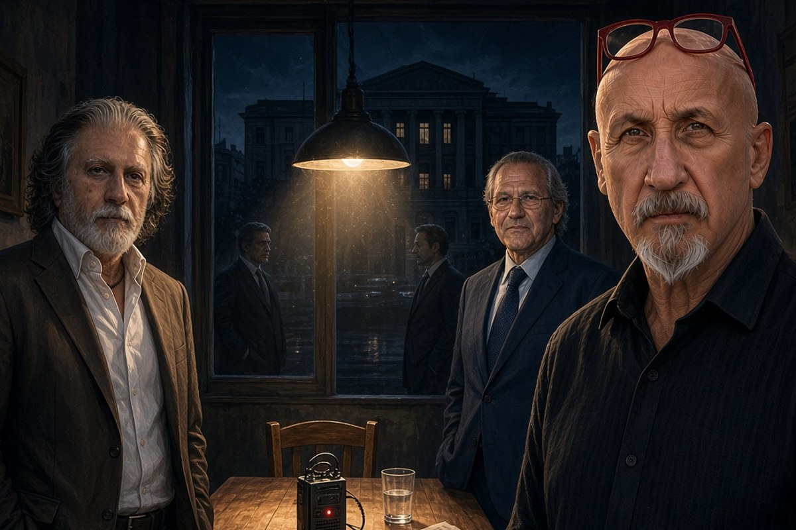

Cronaca · 13 ottobre 2026
La polemica su Scarpinato e Natoli è tutta dentro l'antimafia

Un decreto di archiviazione definisce depistante l'attività del senatore Roberto Scarpinato, che non è indagato. Sullo sfondo ci sono le parole private di Gioacchino Natoli sulla famiglia Borsellino, agli atti da mesi.
di Franco Zanghì
In una casa di Palermo, con le microspie della Guardia di Finanza accese, un ex magistrato del pool antimafia parlava dei figli di Paolo Borsellino come di gente senza neuroni. Quell'ex magistrato è Gioacchino Natoli. Le registrazioni stanno negli atti della Procura di Caltanissetta, sono andate in televisione un anno fa e sono state pubblicate dai giornali nell'aprile 2026. Tornano al centro adesso, perché la polemica di questi giorni non è una polemica fra antimafia e politica: è una polemica dentro l'antimafia.
L'atto da cui è partito tutto
Il 3 ottobre 2026 il giudice per le indagini preliminari di Caltanissetta, Santi Bologna, ha depositato il decreto con cui ha archiviato il procedimento contro ignoti che cercava il movente delle stragi del 1992 nel vecchio dossier mafia e appalti. Dentro quel decreto il giudice ha scritto una frase che non riguardava le stragi: ha definito depistante l'attività del senatore Roberto Scarpinato, ex procuratore generale di Palermo, oggi parlamentare del Movimento 5 Stelle e componente della commissione antimafia. Il riferimento sono le telefonate fra Scarpinato e Natoli, avvenute prima che Natoli fosse ascoltato da quella stessa commissione. In quel periodo Natoli era intercettato perché indagato per favoreggiamento.
Qui serve una precisazione che quasi nessuno sta facendo, e che cambia il senso della vicenda. Scarpinato non è indagato: il giudice lo critica dentro un atto, ma non ipotizza alcun reato a suo carico. Natoli, che indagato lo era, è stato archiviato pochi giorni fa.
La replica, e la reazione della magistratura
Scarpinato ha risposto subito, e ha risposto duro. Ha scritto che dargli del depistante è un'affermazione gravemente falsa, e a sua volta depistante. Ha spiegato che nelle telefonate invitava Natoli a riferire alla commissione una circostanza vera, non una falsità, una verità che Natoli stesso gli aveva raccontato. Poi è andato oltre la nota: ha diffuso un video, ripreso ovunque, in cui sostiene che si vuole colpire lui per mandare un messaggio ai giovani magistrati che indagano sui mandanti esterni delle stragi, e che chi tocca i fili dell'alta tensione del potere viene ucciso, fisicamente o simbolicamente.
La reazione a quel video non è arrivata dalla politica. È arrivata dalla magistratura. Un consigliere del Consiglio superiore ha annunciato l'apertura di una pratica a tutela del giudice che ha firmato l'archiviazione, e nel giro di poche ore tutte le correnti si sono mosse nella stessa direzione. La giunta dell'Associazione nazionale magistrati di Caltanissetta ha scritto che le espressioni usate dal senatore in quel video vanno oltre il diritto di critica, perché lasciano intendere che una parte della magistratura lavori consapevolmente al servizio di un sistema di poteri. In difesa di Scarpinato si è schierato Nino Di Matteo, sostituto procuratore nazionale antimafia, che il 10 ottobre a Roma ha parlato di una delegittimazione ignobile e violenta.
Le parole che stanno negli atti
Dopo la pubblicazione delle intercettazioni di Natoli, Scarpinato aveva diffuso una nota in cui sosteneva che nessuno aveva insultato Paolo Borsellino, che in quella conversazione privata c'era soltanto un paradosso e che infangare lui significa colpire la storia stessa dell'antimafia. Ma le parole, negli atti, ci sono. In una conversazione con Scarpinato, Natoli ha detto che Paolo Borsellino, buonanima, era pure lui un grande coglione come me, che aveva il grande maestro della massoneria dall'altra parte del muro e non se n'era accorto. Nelle registrazioni fatte in casa sua, parlando con i familiari, ha detto che i figli del giudice ucciso sono senza neuroni, e della moglie ha detto che era la moglie dell'eroe, un eroe che da vivo la sbeffeggiava con i colleghi.
Manfredi Borsellino, oggi vicequestore della polizia, ha risposto con una frase sola: chi ha conosciuto la nostra famiglia quelle frasi non avrebbe dovuto nemmeno pensarle. Natoli ha chiesto scusa. Ha detto di averle pronunciate in uno stato di rabbia e di disperazione, nel contesto più privato che esista, mentre si sentiva accerchiato. È l'unico elemento umano della vicenda, perché le parole dette in casa propria, con le microspie accese, sono la cosa più fragile che un uomo possa lasciarsi alle spalle.
La contraddizione
Resta però una contraddizione documentata. Da una parte c'è un senatore che rivendica di aver dedicato la vita alla lotta contro Cosa nostra e che difende pubblicamente l'uomo con cui parlava al telefono. Dall'altra ci sono le parole private di quell'uomo sulla famiglia del magistrato ucciso in via D'Amelio, la famiglia che l'antimafia porta in processione da 34 anni. Non è una contraddizione che sta fuori dal racconto ufficiale dell'antimafia. Sta dentro.
Le indagini sulle stragi restano aperte, lo ha scritto il procuratore di Caltanissetta nero su bianco, e nessuno può dire come andranno a finire. Ma una cosa sulla vicenda di questi giorni si può dire. Quando a una critica si risponde aprendo una pratica a tutela invece di rispondere nel merito, e quando a una frase scomoda si risponde dicendo che chi la riporta sta infangando la storia dell'antimafia, non si sta difendendo la memoria di nessuno. Si sta difendendo un racconto. E un racconto che non regge le proprie contraddizioni, alla lunga, non protegge neanche i morti su cui è stato costruito.
La domanda che resta è questa. Se la memoria di Paolo Borsellino è intoccabile in pubblico, perché in privato è stata trattata così? E se quelle parole sono solo un cedimento umano, come è stato spiegato, perché chi lo difende ha preferito dire che nessuno aveva insultato nessuno?
Fonti
- Open, le intercettazioni di Natoli e le frasi sui figli di Paolo Borsellino, 17 aprile 2026
- PalermoToday, la risposta di Manfredi Borsellino e le scuse dell'ex magistrato, 17 aprile 2026
- Giornale di Sicilia, la pratica a tutela del gip chiesta al Csm, 5 ottobre 2026
- Editoriale Domani, le correnti del Csm e la richiesta di tutela, ottobre 2026
- La Sicilia, la nota dell'Associazione nazionale magistrati di Caltanissetta, 5 ottobre 2026
- Il Fatto Quotidiano, la richiesta di tutela per il gip Santi Bologna, 7 ottobre 2026
- PalermoToday, l'archiviazione della posizione di Natoli nel decreto del gip
La vicenda è aperta: la pratica a tutela del giudice è stata chiesta al Consiglio superiore della magistratura ma non è ancora conclusa, e le indagini sulle stragi del 1992 restano in corso.